This week, have you used any non-parental care for your child(ren) under the age of 5?
Response options: Yes, No, Unsure
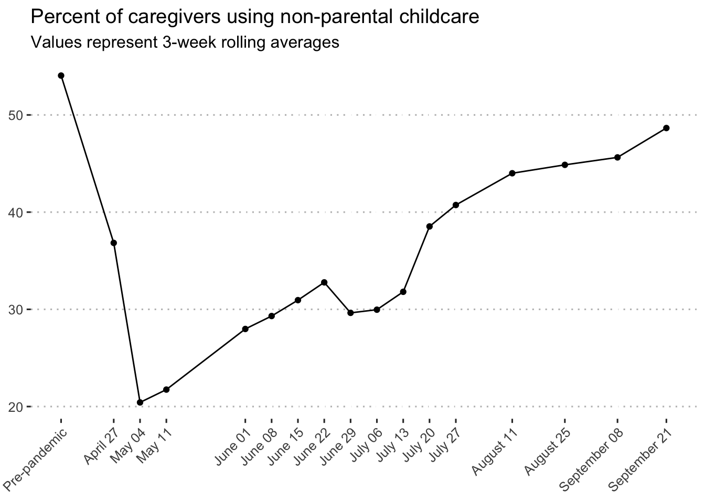
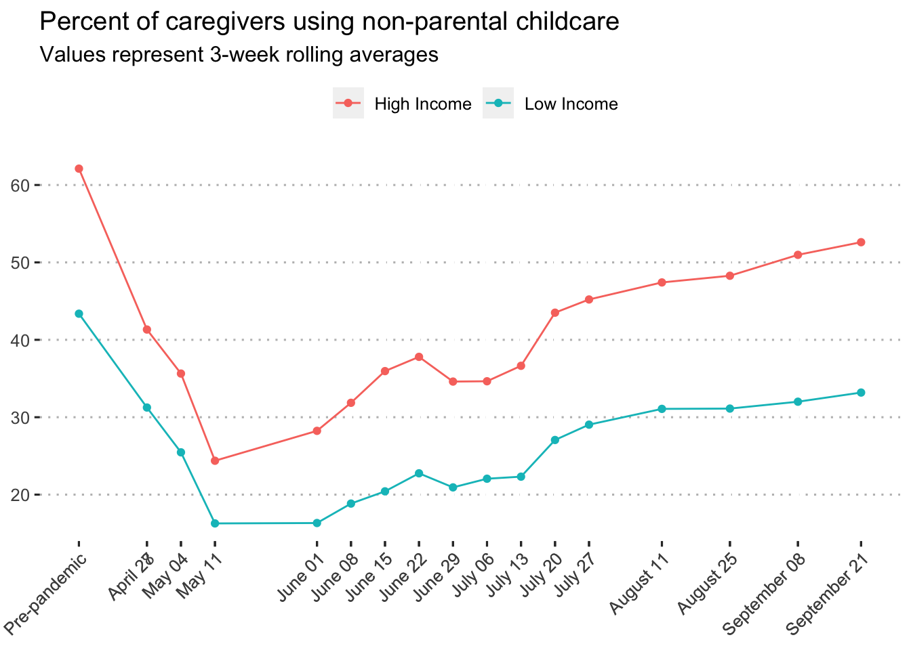
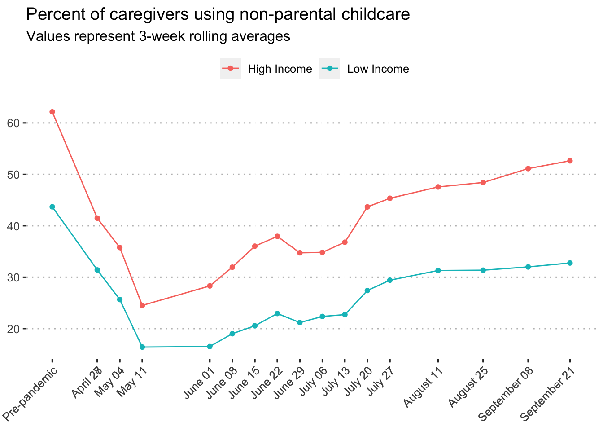
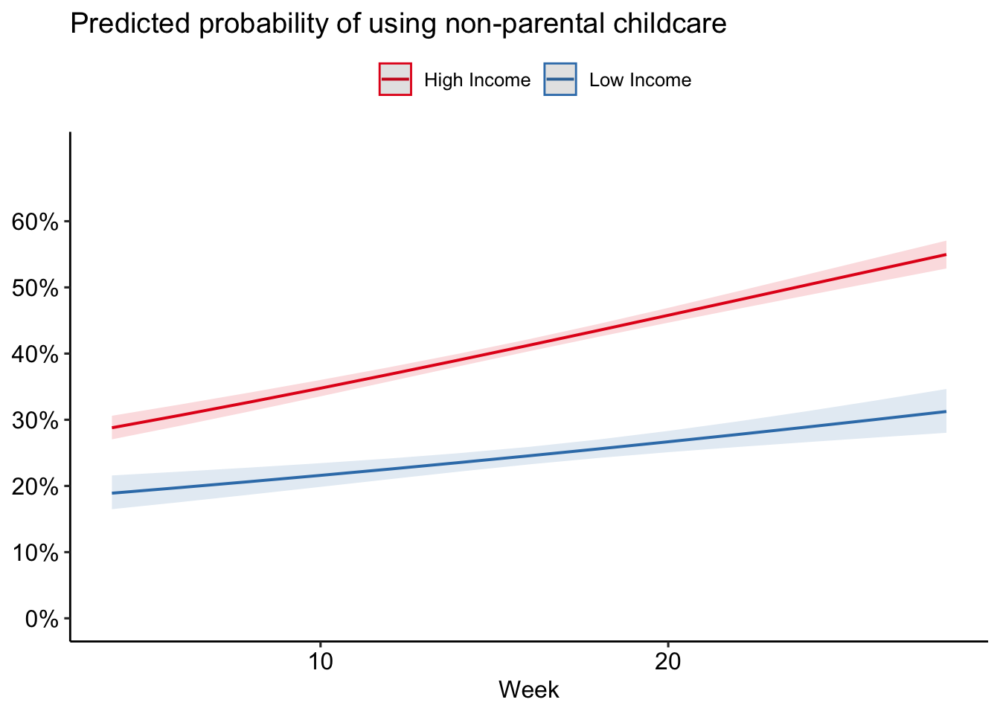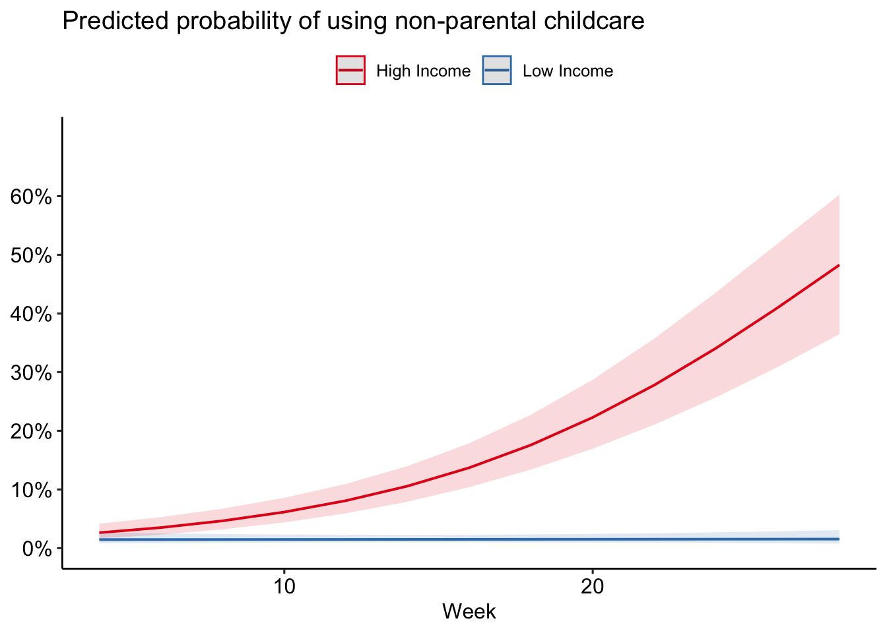
What are the biggest challenges and concerns for you and your family right now?
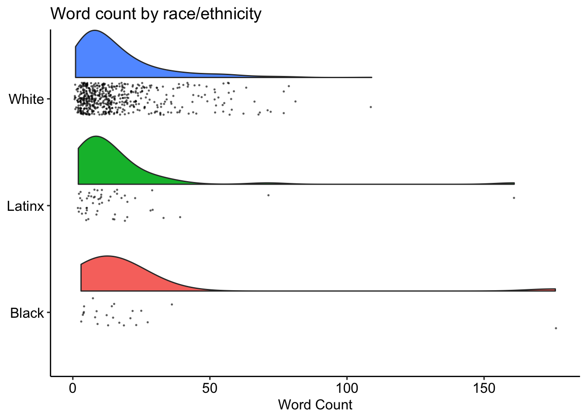
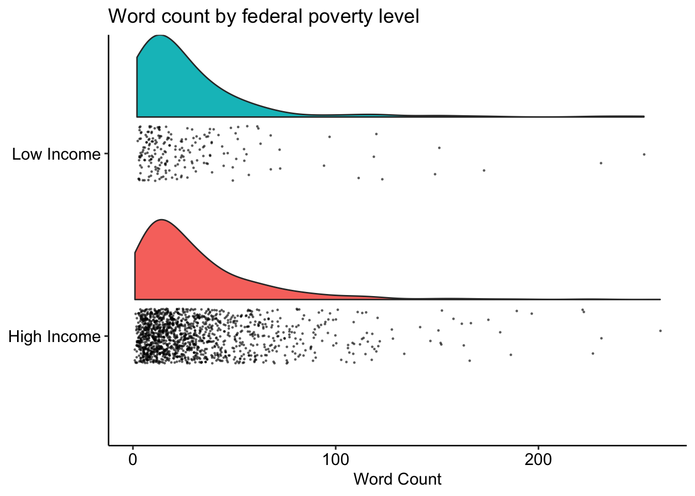
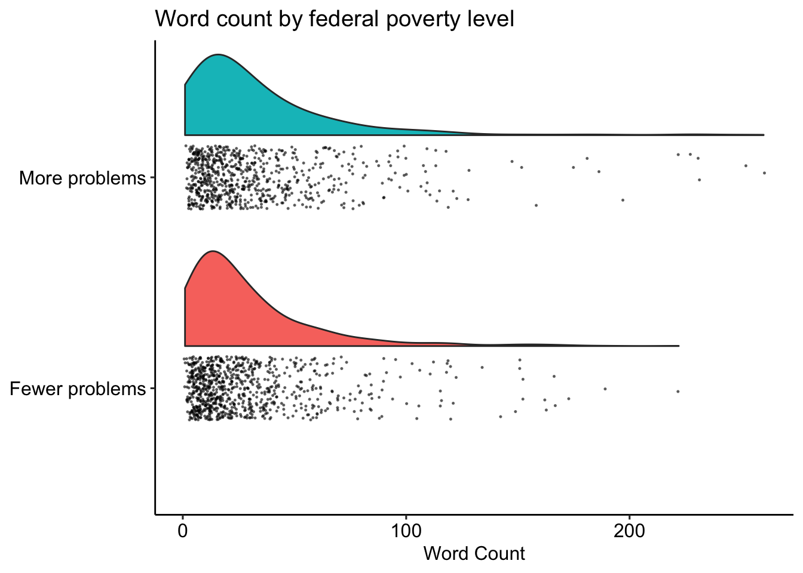
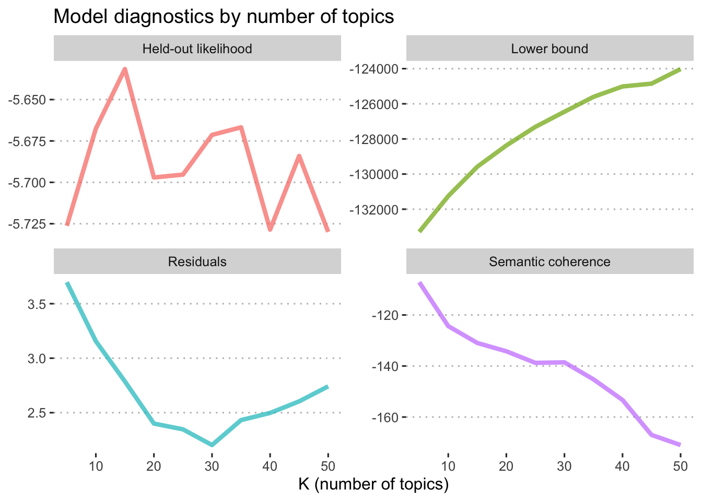
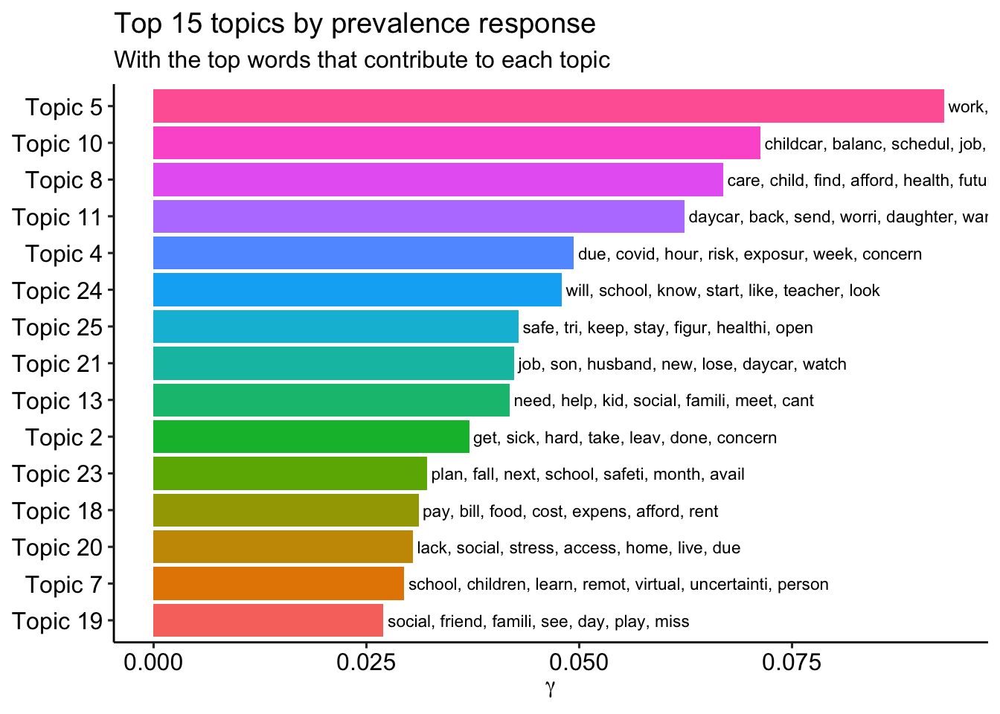
## Topic 1 Top Words:
## Highest Prob: incom, financi, offic, reduc, think
## FREX: financi, offic, debt, reduc, incom
## Lift: finaci, financi, debt, offic, transport
## Score: financi, finaci, offic, incom, reduc##
## Topic 1:
## Steady income, finding childcare.
## Reduced income, childcare
## reduced income, returning my child to daycare
## We have no childcare, indefinitely, and my job is pushing us to go back into the office.
## Financial burden of building debt coupled with taking on full time childcare, causing one parent loss of time to work and generate income## Topic 2 Top Words:
## Highest Prob: get, sick, hard, take, leav
## FREX: sick, get, done, hard, groceri
## Lift: workdaycar, emerg, impati, sick, breastfeed
## Score: get, sick, workdaycar, hard, done##
## Topic 2:
## My biggest concern is that I had to use all of my paid time off (sick leave and vacation) when my daughter was born for pregnancy recovery and parental leave. I'm also taking intermittent parental leave one day per week until my daughter turns one. However, in order to do this, I have to have my paid leave banks exhausted all of the time, so I'm very fearful of me or my wife getting sick and being too sick to work and me having no leave. I pay for a short term disability policy but it doesn't take effect until you've missed 2 weeks pay and then it is only 60% income replacement. The policy also only covers my own illness and wouldn't help if my wife was too sick to care for our children.
##
## The lack of paid parental leave and paid pregnancy disability leave makes our income feel more precarious as a single income household (due to the high cost of childcare where we live, my wife stays home to care for our children) during this public health emergency.
## Getting mental health and marriage counseling .
## The health of my mother, who does all childcare is troublesome. She has 2 autoimmune diseases and we are concerned about exposing her
## My son needs services, possible autism cannot get diagnosed at Kennedy kreiger even on short wait list cannot get in, my daughter wants to be with friends and go to summer camp but waiting for day care to open
## We recently sent our child back to daycare and it's been great for everyone's mental health; however, there is the stress of her getting sick and bringing it back home. I'm currently 36 weeks pregnant so am concerned about what that would mean if she got sick and passed it on to us.
## Sharing child care duties while getting important things done for each person, equally## Topic 3 Top Words:
## Highest Prob: babysitt, expos, babi, test, covid
## FREX: babysitt, test, result, expos, medic
## Lift: cold, ppd, patient, rest, result
## Score: babysitt, cold, test, result, diagnos##
## Topic 3:
## My daughter was always on the shy side and sometimes with separation anxiety, a lot of which I attributed to my being a stay at home mom and her always being with me. But since we’ve been completely quarantining for months due to fears of Covid I worry she’ll be socially regressed after this. She’s great with her dad and I but I don’t know how she’ll be with others. Also, it’s been hard to never get a break as a SAHM and hard on our marriage. We used to use a babysitter to go on dates and we miss that.
## My husband and I being able to have a break from our infant has been difficult because we can't really have a babysitter with the pandemic. We also can't go out to eat or walk around the mall or really go anywhere fun because it's unsafe. It's very isolating to live like this.
## I'm afraid to seek outside help like a babysitter but I am sleep deprived and was recently diagnosed with PPD.
## I am unwilling to seek non-parental help (hiring a babysitter) due to fear that it will expose our household to COVID 19.
## I work in healthcare and I could be exposed to Covid. I'm not sure if my husband would be comfortable with me quarentining I'm there house if I were exposed. We also could really use a break from childcare, which has more to do with my work hours than Covid, but also there aren't many options for social outlets for the 3 year old and he's been desperate for friends.## Topic 4 Top Words:
## Highest Prob: due, covid, hour, risk, exposur
## FREX: exposur, due, risk, hour, center
## Lift: serv, shorten, trace, busier, transit
## Score: transit, due, shorten, hour, week##
## Topic 4:
## We had to change daycare due to our previous in home daycare closing. We are very concerned about having to stop working in order to care for our child. They closed due to new state ordered restrictions put in place due to covid. Many childcare places have closed due to this in Maine.
## If I'm un-furloughed it's a high covid risk position plus my daughter's risk at daycare.
## There have been positive COVID cases in the daycare but the daycare isn't very concerned and isn't tracing. Daycare has limited hours and is no longer serving food but the cost has stayed the same.
## I am concerned about finding quality childcare. Many daycare centers are still closed or have limited numbers of children they are taking due to the pandemic. We cannot find our infant a daycare spot and have had to rely on one off baby sitters and family members to watch him.
## General safety when attending daycare due to concerns with COVID-19 infection.## Topic 5 Top Words:
## Highest Prob: work, home, time, full, parent
## FREX: work, full, home, time, manag
## Lift: oblig, full, work, kids’, home
## Score: home, work, time, full, oblig##
## Topic 5:
## Continuing to manage full-time work from home with full time childcare at home
## One parent working full time at hospital/ high exposure risks, other parent (self) managing working from home full time and taking care of 1 yr old at same time- both parents work in “essential” fields and work same shift / daycare is currently closed. Biggest fear is (self) retuning to work in office 7/20 and child going back to daycare
## Managing WFH more than full time while also managing childcare.
## Managing work and home education/child care obligations.
## Two parents Working from home without childcare## Topic 6 Top Words:
## Highest Prob: provid, support, unemploy, isol, parent
## FREX: support, provid, overwhelm, isol, unemploy
## Lift: abus, aunt, support, coordin, provid
## Score: support, abus, provid, isol, unemploy##
## Topic 6:
## Financial instability, mother/grandma who is our biggest support is in poor health and her healthcare is expensive, I have poor mental health and my child’s father has substance abuse issues and does not provide financial or child care support.
## Coordinating childcare between roommates who are out of work and on unemployment and the child's Aunt & Uncle. Providing appropriate social emotional support to my child.
## Worried about cases increasing and immune compromised grandma (and childcare provider) catching it
## Contracting COVID, Running out of sick leave, & not receiving a paycheck. Would not have childcare or any support should that occur
## The loss of the unemployment stipend ($600/week) has pushed us immediately off of a cliff and into free fall.
##
## As a solo parent I have been unable to find work because there is no free and reliable childcare, and even private daycare is unreliable, and has limited scheduling available.## quartz_off_screen
## 2## Topic 7 Top Words:
## Highest Prob: school, children, learn, remot, virtual
## FREX: learn, remot, children, virtual, school
## Lift: substanc, remot, learn, virtual, children
## Score: school, learn, substanc, children, remot##
## Topic 7:
## Virtual learning and childcare
## virtual learning our 2nd grader-keeping him motivated. and if day care closes or we have to quarantine, virtual learning will be 100x more difficult
## In our area there is only remote learning. So I'm looking to quit my job . My older children can't help my smaller children during class
## Navigating homeschooling; my children aren’t a private school with a remote learning option, and we are the only family in their classes that has opted for remote learning. We purchased a secular homeschool curriculum (because 5 & 3 year olds don’t want to sit in front of an iPad), and check in with their classes a few times a week. We are learning what schooling looks like for us.
## Remote learning and childcare## Topic 8 Top Words:
## Highest Prob: care, child, find, afford, health
## FREX: care, find, child, afford, futur
## Lift: reduct, decent, consist, find, care
## Score: care, child, find, reduct, afford##
## Topic 8:
## Economical issues and child care.
## Child education future child care
## Finances, child care and affordability of mental health care.
## Finding employment and safe child care
## Primary concerns are not being able to find affordable child care while I find work.## Topic 9 Top Words:
## Highest Prob: make, money, enough, much, can
## FREX: money, enough, make, adequ, problem
## Lift: corona, adequ, money, deni, enough
## Score: enough, money, corona, make, adequ##
## Topic 9:
## Loss of usual childcare. Previously had an au pair, by executive order has blocked those visas through end of 2020. Unsure how we will find similar childcare without spending a ton of money
## Concern over money if I stay furloughed and my concern that I’m giving baby enough stimulus and education since he’s not going to daycare.
## I am having an uncomfortable pregnancy. Money will be tighter once the second baby arrives due to cost of childcare.
## I am pregnant and I do not make much money. I am worried about the cost of childcare.
## Money for bills, mortgage payment, daycare, car payment## quartz_off_screen
## 2## Topic 10 Top Words:
## Highest Prob: childcar, balanc, schedul, job, can
## FREX: balanc, childcar, reliabl, schedul, self-employ
## Lift: self-employ, balanc, childcar, reliabl, immens
## Score: childcar, balanc, self-employ, reliabl, appropri##
## Topic 10:
## No childcare - balancing work & childcare.
## Balancing 2 schedules with childcare
## balancing work and childcare - helped immensely by childcare reopening
## Balancing work and childcare
## Balancing work and childcare## Topic 11 Top Words:
## Highest Prob: daycar, back, send, worri, daughter
## FREX: back, daycar, send, want, worri
## Lift: workplac, hardest, thrill, ifwhen, freelanc
## Score: daycar, back, send, workplac, routin##
## Topic 11:
## Routines. Especially bedtime routines. Still a little anxiety as they go back to daycare. Separation anxiety.
## Whether or not to send our son back to daycare. Cases are blowing up and the stories of outbreaks at daycares freak me out, but our “new normal” is so exhausting!
## Scared to send kids back to daycare and scared to go back to the office
## I have no idea when work is going to call me back and my daycare wants to know when we’re coming back. I don’t want to pay for something I don’t need so the uncertainty is very stressful
## I am worried about going back to the office and sending my kids to daycare. I am worried that my employer will suddenly call us back and I’m not ready. I am also terrified of the winter## Topic 12 Top Words:
## Highest Prob: week, time, husband, pandem, now
## FREX: structur, per, contract, independ, campus
## Lift: urgent, averag, handyman, own, preschooldaycar
## Score: preschooldaycar, week, structur, watch, potti##
## Topic 12:
## My husband owns his own handyman home repair business. It has slowed greatly because people don't have much money for repairs right now and because people don't want people in their house much right now. I am a stay at home mom, but I nanny part time for a family whose mother is a nurse. Her hours have gone down a bit (but she has not been laid off luckily), but that means my hours watching her kids have also decreased, which also hurts our income right now. I am also 34 weeks pregnant and kind of emotional at the moment, paired with my husband's recent behaviors, and our finances being VERY tight this week/month - that has been the point of my recent stress/anxiety. One other thing to point out though, is that is has been very difficult to be in the Texas heat wearing any sort of mask (which I only wear on the rare occasions I am out in public like the grocery store - per our county's mask mandate).
## My husband owns his own handyman home repair business. With the pandemic, people don't really want visitors in their homes. So his work has dramatically slowed down, lots of big projects cancelled. I bring my daughter with me to nanny a few days a week for a mom who is an urgent care nurse. Her work has thankfully not laid anyone off, but her hours have decreased, which mean I watch her daughter 2 days/wk now instead of previously 3 days/wk, which also means decreased income for us. Besides finances, a lot of my recent stress (in the last week), has been because of potty training my daughter. Even though it's going well, it's a test of patience and very stressful at times. And my husband and I have had 2 major fights in the past week, which is uncommon for us. So my stress is not totally from the pandemic.
## My husband works for himself and his work has slowed because of COVID and the craziness of the world right now. I nanny part time for an urgent care nurse (and take my daughter with me). She has been able to keep working (despite a lot of other urgent care places laying off employees). So this has been a life saver that I am still able to nanny for her during this time. But her hours have been cut a bit. Thus my hours nannying for her have gone down a little as well (about 2/3 of what they were before). And this week, my daughter has been a little more defiant and clingy and ups/down emotionally because we have just started potty training her. On a usual basis, she is not fussy or defiant at all. But she is testing boundaries these days. Just to see what happens.
## Loneliness. We are really trying to do our part to help stop the pandemic by minimizing visits with family and friends. This past week, I had a virtual conference for my field (I am a grad student), and my mom and sister came to help with the baby. It made such a world of difference to be able to hug and spend time with someone in addition to my husband.
## Childcare is the other biggest challenge, insofar as I need to write my dissertation. I get frustrated sometimes that my paycheck is the more reliable of the two of us but my husband's job takes precedent over how we spend our time (he is a journalist so he has to be available at all hours, even though they will only pay him for 35, 40 before the pandemic started). It is really hard to find writing time or interview time with my participants because of this. Before the pandemic, I had planned to hire an in-home nanny two days a week. Now, it's just me and the baby until my husband runs out his 35 hours; then he takes her and I have more research and writing time at the end of the week. So the beginning of the week is always more frustrating than the end regarding our lack of childcare.
## Youngest child’s behavior (has autism and not having structure of preschool/daycare has been very hard for him).## quartz_off_screen
## 2## Topic 13 Top Words:
## Highest Prob: need, help, kid, social, famili
## FREX: need, meet, help, therapi, develop
## Lift: event, evalu, aris, need, realiz
## Score: need, event, meet, help, social##
## Topic 13:
## We desperately need help from family members, or access to free childcare and socialization for the kids, for multiple reasons: to give us a break, to give us time to find jobs, to help social development for the kids, to help my oldest child feel somewhat normal, etc.
## No longer having help from family with childcare.
## The kids understand the virus but are frustrated that they can no longer do many of the things they once enjoyed doing.
## We are concerned about our 3 year old’s development and education. He was thriving in preschool and now that it’s closed we struggle with providing him the attention and stimulation that he needs. We have a newborn and no outside help with childcare.
## Being unemployed and not knowing if I'll be employed at the end of the pandemic. If I need to change careers. What to do for childcare if I do need to change careers. My child has asthma.
## Limiting our interaction and exposure to others when we need medical care, childcare, etc. Elderly family members who want to continue going out on a regular basis.## Topic 14 Top Words:
## Highest Prob: year, old, children, month, two
## FREX: year, old, ensur, privat, contact
## Lift: immers, ensur, altern, spanish, workchildcar
## Score: year, old, immers, privat, ensur##
## Topic 14:
## My biggest concern is about the social development of my daughter. Prior to Covid, we did mom and baby music classes, story times, and Bible studies. For my daughter, she interacted with other adults and toddlers and then suddenly she no longer saw any children and the only adults in her life became me and my husband. She is young, but I wonder if it will affect anything to have gone several months without the opportunity to interact with different adults or other children.
## As a teacher, my biggest concern is teaching and whether they will let us work from home or force us to teach from our classrooms(remotely).
## I am also seeing more increased social issues for my 5 year old. We’ve seen a behavior change in him especially over the last three weeks.
## Ensuring interactions with other children when we are not enrolled in daycare or Spanish immersion.
## I will be returning to work, as maternity leave is ending. My job involves a lot of exposure to the public and young children. I am asthmatic and the 3 year old has a part of a lung missing due to a congenital birth defect. The three year old and 2 month old have to go to daycare, and the older children have to go in person to school so my husband and I can work.
## Expecting a second child in 6 weeks and fearful of having family visit, watch our oldest. Would it be safe to go back to daycare? Who can we really trust with our children as restrictions are loosening and everyone has decided what their own personal definition of "safe" is. Delivering the baby alone if we can't trust anyone to be there for us safely## Topic 15 Top Words:
## Highest Prob: hous, move, nanni, parent, also
## FREX: move, hous, nanni, prepar, loan
## Lift: loan, move, mandatori, divorc, prepar
## Score: loan, move, divorc, hous, nanni##
## Topic 15:
## Got called for jury duty, trial may be an extended period. Previous childcare arrangement not sufficient.
## My spouse and I are slowly but surely untangling our finances in preparation for divorce. The kids are handling a two-time arrangement reasonably well. My three year old does not really understand what our divorce means, and he is doing pretty well at adjusting to our new family life. My now six year old (five when I started the survey process) is struggling. She is realizing that her parents won't be getting back together, and that has been heartbreaking. Our nanny also has noticed our six year old acting out a bit more.
## Childcare. I’m a graduate student employed as a teaching assistant. COVID actually improved my mental well-being because I ended up home with my kids all summer with barely any work to do (I get paid anyway). I had less stress and was actually able to hang out with my kids, whereas before I saw them for like an hour at night before bed. But now that school is starting up, I’m worried about COVID cases exploding in my college town. I worry about what I will do if daycare closes but I still have to teach. And right now finances are tight, my husband hours were cut (unrelatedly to COVID) and my student loans don’t come for another couple weeks.
## distance learning kindergarten, newly immigrated step child and husband, no work visa for my husband held up by USCIS, no childcare when he can get a job eventually, can't afford childcare, many house repairs and expenses, using up all of my savings, very stressful as a nurse working right now
## childcare- private nanny costs too much and daycare centers with masks all day would impact language development for baby upon moms return to work.
##
## School/childcare for older kids- they will be hoke alone and parents will be unable to provide appropriate level of learning support. District is all virtual and both kids have special needs and learning differences with IEPs that the district cannot accommodate. Oldest child developed depression during spring with suicidal ideation, so very concerned about leaving him home alone with noone but his younger sister for company## Topic 16 Top Words:
## Highest Prob: sinc, financ, week, employ, time
## FREX: financ, begin, util, search, sinc
## Lift: tax, risen, file, search, director
## Score: tax, financ, search, employ, march##
## Topic 16:
## Our daughter just started preschool again 2 weeks ago after being at home for six months during Pandemic... Unfortunately she was just dismissed because she wasn't behaving properly. They gave her 4 days to adjust and now we have no childcare available. It is extremely frustrating when adults don't understand the children need time to adjust.
## I was recalled from my job from being on furlough since March. I work in a child care facility and when we closed in March, I was paid by the director until June. I then was furloughed in July and was recalled to my position on 8/29. However, I was only working part time (3 days) when put on furlough and I was recalled to work 5 days. I was unable to do so since I only have child care 3 days a week from my mother. So I had to quit my job. I have been searching for a part time job (working 3 days) since quitting my job. I have been waiting for a decision to be made by unemployment since the beginning of the month to see if I still qualify for unemployment benefits. So essentially, I have had no income for 3 weeks and we have been relying on our savings which are draining. So finances are a challenge and me finding new work is stressful since I can only
## work 3 days due to child care. Additionally, my very active 3.5 year old was pulled from school in March and we are trying to get him enrolled in a local preschool to help him have some routine, peer socialization & time being active outside of the home.
## Managing infant twins is hard enough to begin with, but I wish we could get a break or have childcare help. Also I am in the middle of changing jobs and we close on a new house this week. So many life changes at once just is stressful - even if they are positive changes, they require a lot of time and attention to detail.
## My husband is self employed and got no government help. We filed our taxes late and got no stimulus payment. My son started speech therapy for the first time in the middle of this pandemic and it’s been rough. I teach high school and march-may teaching from home was awful when daycares closed.
## My job may be at risk, with sweeping layoffs coming. Even if I am lucky to maintain a position at my company, it would be smart to begin the search for a new role elsewhere. But looking for a job and potentially starting a new job while I am facing less than ideal childcare issues seems like such a hurdle.## Topic 17 Top Words:
## Highest Prob: abl, feel, mean, husband, babi
## FREX: abl, mean, hold, near, feel
## Lift: daycareschool, court, unless, caretak, intend
## Score: abl, daycareschool, hold, care, husband##
## Topic 17:
## My husband and I are both working from home and splitting childcare. We had intended to hire someone to help with childcare but don't feel confortable doing that in light of the pandemic. We have to split shifts so someone is always caring for the baby, which means we don't see each other much.
## Knowing the right choice for how much social distancing is enough - especially when it comes to using my mother in law, who is in her 70s for childcare. She was our primary childcare before. Having her back would make an immense difference, but are we putting her at risk? Especially knowing soon my husband may need to travel for work and I may need to go back to a busy, open office environment. In the meantime while we delay that decision, it is just the daily stress of managing video conferences while caring for a busy toddler who is too young for independent play - and then doing the work that can’t be completed during the day overnight.... which means every day is managed with sleep deprivation.
## We were able to put our mortgage payment on hold in March when my husband was laid off, but the payment will be due in lump sum in August unless we’re able to update the terms of our loan. While we were able to save money, it would be a strain on us financially to pay the lump sum.
## We still do not have a long term child care plan for our son, particularly because none of the options we have outside of our home feel 100% safe so for the most part he is staying with me while I work from home, and my mom is able to help some.
## It is also getting stressful that the local cases continue to climb and my husband works in a healthcare job where he must be close to others. While they are taking precautions, I’m growing more concerned he may bring home the virus and what that could mean for him, my son, my mom and me.
##
## Baby is scared of everyone except my husband and I, so getting help with child care is nearly impossible. My parents are able to come help off and on as they live a couple hours away, but our daughter screams whenever anyone else tries to come near her / hold her.
## Like everyone else, childcare. We don’t feel like center-based care will be reliable this year with closures any time there is a diagnosis. We are fortunate enough to be able to afford a nanny, but it is hard to find qualified candidates, especially now that schools are virtual. We have a hospital employee in our home too which makes some people wary of helping us and means we can’t rely on grandparent help like we used to.## Topic 18 Top Words:
## Highest Prob: pay, bill, food, cost, expens
## FREX: bill, pay, food, expens, cost
## Lift: fund, oper, item, workno, higher
## Score: fund, pay, bill, food, expens##
## Topic 18:
## affordable childcare. We are paying for a nanny which we can barely afford AND we are trying to negotiate with our daycare provider not to give away our spot because once the pandemic is over spots for daycare are going to be a mad scramble. So we will probably end up paying THEM as well to keep our spot.
## We would like to put our girls with a good daycare but prices per child are outrageous, even for part time care. Also, not all caregivers apply food, snacks, diapers, etc. That would be an additional cost on our end
## Prices have gotten a lot higher during the pandemic. The foods we normally buy are sometimes out of stock so we're forced to buy higher priced items. I had to take my child out of daycare because I couldn't afford the cost anymore. It's okay for now because I'm working from home but it puts more stress on me to try to get work done and keep her occupied at the same time.
## child care and food cost. I work in a clinic as a senior medical assistant. I am up at 4am with my children to get them to my mothers house for daycare because i cant not afford to pay for child care for my two kids. I try to pay my mom every two weeks between 100-200 dollars because that is all i can afford to her. I am very grateful that she helps me. Even though she doesnt offer me to pay i still insist because caring for someone's child is hard work.
## Paying for quality food and paying for college courses in childcare## quartz_off_screen
## 2## Topic 19 Top Words:
## Highest Prob: social, friend, famili, see, day
## FREX: friend, play, group, visit, miss
## Lift: mommi, playgroup, recogn, energet, hasn’t
## Score: playgroup, friend, group, miss, toddler##
## Topic 19:
## We had a very active social life pre-pandemic and have not socialized with anyone with March 11th. Our weeks were busy and fun, filled with preschool, play dates, playgrounds, gymnastics class, family visits, and now my daughter is missing her friends and teachers terribly. I am struggling with my own loneliness and fear. Although they weren’t very close, my husbands grandmother just passed away in a nursing home from Covid-19, and it has made us very apprehensive about visiting either of our parents. We wish we had answers about when the world might look more like it did before.
## I'm concerned about loneliness and feeling disconnected. My biggest concern is about my daughters. The three year old goes to prek3, but they're not allowed to sit next to each other or play together. She misses her friends a lot and is always desperate to play with other children when we go to the park. Every day she asks to play with a friend or to go to the playground to see if she can find any friends. It breaks my heart. Before she started prek3 in September, we'd spent the full 6 mo that in isolation. She had started getting depressed. My sweet 3 year old was depressed. She said things like "my tummy hurts", and she wasn't sick or hungry or injured. She would spend part of her nap time yelling out her bedroom window "animals come! My name is xyz. Animals come!" Because she wanted animal friends. One night she started singing "we're sad, we're sad, family is sad, because we're trapped, we're trapped, in the house ". She would get sad when we talked to her grandparents on the tablet, pointing out that they were not here. The first 4 mos of the pandemic were so hard. Now for my 7 mo th old I worry about her socialization. And having friends -- how is she going to make friends?? She is at home with us, not daycare. When should we start setting up aydates for her? Should we? Can we?? What are the first 2 years of her life going to be with this isolation?????
## We just started a nannyshare with a neighbor/colleague for our 4.5 year old, 6 month old, and our neighbor's 7 month old. Our 6 month old cries the entire day. The ENTIRE DAY. Every moment she's awake she scream cries. She cries so much her voice is hoarse. She gave herself a blood nose yesterday. So our 4.5 year old is reasonably distressed and just hangs out in the basement or hides in our home "office" with his earphones on. I recognize that this may be partly developmental, but it's painful. The only silver lining (small, and mixed bag) is that she sleeps well for the nanny, but this is partly because she's so exhausted from crying that she just passes out.
## I stay at home with my children and did prior to the pandemic. What we are sorely missing right now is community. We were very involved in programs and classes like at the library and art center. It is hard on us to not have much social interaction and friendship.
## Social development while we're isolated from friends & playgroups.## Topic 20 Top Words:
## Highest Prob: lack, social, stress, access, home
## FREX: lack, access, space, clean, live
## Lift: necess, outdoor, sport, fresh, internet
## Score: lack, outdoor, govern, product, live##
## Topic 20:
## Never getting a break from childcare and feeling burnt out as parents, the small size of our living space (720 sq ft rental) and long periods trapped inside together because of poor air quality due to smoke from wildfires, poor mental health because of lack of exercise and time outside
## Anxiety and depression
## Being home too long
## Not socializing except with family
## My daughters behavior
## My husband’s aggression towards her
## Not being able to pay for therapy and childcare
## New diagnosis of Lupus for myself, more stress
##
## Lack of childcare (preschool recently opened again but weather-related closures are frequent and cases are rising in my state so we expect it to close again at some point)
## Not having childcare outside the home, budgeting our current income for necessities and upcoming holidays, not being able to shop together to make decisions
## Social isolation. Lack of access to childcare because of fears of virus spread. Feeling overwhelmed with a newborn at home with no help. Lack of access to In-person marital and personal counseling.## Topic 21 Top Words:
## Highest Prob: job, son, husband, new, lose
## FREX: lose, job, son, secur, anoth
## Lift: subsid, encourag, muscl, tone, love
## Score: son, job, subsid, new, watch##
## Topic 21:
## Stressing about me not currently having a job. This has caused tension between my husband and I. Also, worry about putting my son in daycare.
## My husband isn't having luck finding a job after graduating in May. Anf I'm worried about my son's development because he's not in daycare.
## Job security going forward. Our child’s experiences when daycare reopens.
## I just graduated with my doctorate in physical therapy.... I would love to start working but the job market is terrible and we have no childcare options for our son. Furthermore, we’re uncomfortable with the idea of sending him back if/once his preschool reopens due to concerns about virus transmission
## Concerned about when the pandemic will end and I’ll be able to go to work- I just finished my doctorate in physical therapy but the job market is horrible right now and even if I could get a job, we don’t have childcare open yet for my son... so that’s probably the biggest stressor at the moment## Topic 22 Top Words:
## Highest Prob: challeng, biggest, now, right, grandpar
## FREX: challeng, biggest, decreas, grandpar, right
## Lift: economi, accustom, ongo, housekeep, challeng
## Score: economi, challeng, biggest, decreas, right##
## Topic 22:
## Biggest concern is that someone in my immediate family or parents will have a severe case of Covid-19, which may lead to disability or death. I feel that based on research, my children would recover well, but it is uncertain with myself, my spouse and my children's grandparents who also provide childcare.
##
## A great challenge is homeschooling my daughter who is in Kindergarten, while also maintaining my job.
##
## A source of uncertainty and anxiety is job security due to the economy is in a recession and companies are having layoffs left and right.
##
## Loneliness is another challenge, as quarantining makes us feel less connected with others.
## Other then finding a place to rent is almost impossible the high rent makes it almost untouchable also to have 3x rent or to even make that a specially with only 2 small child care places and one 1 being state approved also there is a packed waiting list.
## Having our nanny and housekeeper return and fears about adding to our exposure. Fear about the community reopening even though cases are still extremely high. Choosing not to go out for an indefinitely amount of time.
## Stress is high right now. We have had huge increases in cases in our state and county recently. We are worried about our safety. Our childcare situation for our oldest child is now uncertain for the fall (starting mid-August). We are lonely as we have not seen our relatives/families since Christmas. We hope to see them in a couple of weeks, although dependent on the COVID situation in our state.
## Our biggest challenges relate to childcare for my daughter. Prior to COVID-19, my mother-in-law, grandparents, and a mother-figure (woman who was my father's girlfriend for 20 years, including the majority of my childhood) of mine watched my daughter while I worked outside the home. I am currently doing tele practice speech therapy. As Berks County prepares to enter the green phase of re-opening in Pennsylvania, I may be expected to go back to providing home-based services and need increased childcare. However, all caregivers except my mother-in-law are elderly and immune compromised. I can't comfortably ask them to come back, but my mother-in-law is a self-employed photographer and needs to work too.## Topic 23 Top Words:
## Highest Prob: plan, fall, next, school, safeti
## FREX: next, plan, safeti, fall, happen
## Lift: long-term, stretch, outcom, unknown, announc
## Score: next, long-term, plan, fall, safeti##
## Topic 23:
## We are both professors and planning for the fall with childcare and unknown cuts and unsure plans... that's really stressful
## We are planning for a second child, and unsure how we’ll have childcare for dr appts and giving birth if there’s not a vaccine or drastically reduced rates of covid-19 in the next year
## Trying to plan for income/childcare for August through this fall (and beyond) without knowing for sure what my employment situation (independent contractor within schools / dancer in a dance company) will be due to the always evolving COVID-19 crisis .
## Planning for this fall when our jobs and childcare depend on what happens with the pandemic.
## Safety, concern about future loss of childcare if closures happen again## Topic 24 Top Words:
## Highest Prob: will, school, know, start, like
## FREX: will, know, teacher, kindergarten, look
## Lift: meal, unpaid, will, know, kindergarten
## Score: will, start, meal, know, school##
## Topic 24:
## planning for the future. how long will this last? what if daycare closes again? will the public school system exist when she starts kindergarten?
## What the fall will look like. Both myself and my husband work for a school
## District. What will school look like? What will daycare look like? What will be safe?
## My daughter will start kindergarten and I have to turn back to work as a teacher at preschool but if the schools don’t open full time I don’t know how I will provide extended childcare for my daughter. Also virtually learning process is not effective for the kids who starts to school by this year as kindergartener. They don’t know reading or writing and they don’t know the classroom environment and the new teachers and classmates, it would be a challenge for all of us if they start as virtually. On the other hand, we have still lots of health safety concerns so totally I don’t know what we should do for next month about the schools reopening.
## What the upcoming school year will look like and how I should best approach the daycare situation.
## What will happen with schools in the fall. My husband is a first grade teacher, I also work in schools, and our children will be in kindergarten and 2nd grade. If schools are open, or one of our schools is open, or schools are open only part time or schools are closed I will either be worried about health risks, or worried about balancing work demands and childcare/virtual schooling.## Topic 25 Top Words:
## Highest Prob: safe, tri, keep, stay, figur
## FREX: safe, figur, keep, healthi, tri
## Lift: determin, view, safe, remain, healthi
## Score: maintain, safe, determin, tri, figur##
## Topic 25:
## Trying to decide when it's safe to see family and friends, especially since numbers are on the rise again. Trying to plan for employment and childcare for this fall, as our jobs are based in education and/or the arts which are TBD based on the virus.
## Making sure daycare remains open and everyone stays healthy.
## Staying healthy, income remaining the same, daycare remaining open and safe
## Keeping my family healthy while both parents work full time and toddler goes to childcare center and 7 year old goes to grandparents. Too many chances for virus exposure, but not many options
## Staying healthy, especially now that my son is in daycare. Also keeping healthy with respect to mental illness (anxiety and depression).## Topic 26 Top Words:
## Highest Prob: stress, high, job, now, new
## FREX: bad, high, suffer, level, relationship
## Lift: fail, news, bad, season, five
## Score: bad, high, suffer, level, five##
## Topic 26:
## Two very busy essential jobs, one in public health. Not having stable childcare, not feeling like two job households are sustainable.
## 1. On days I don't have help with childcare, working from home and also trying to manage my daughter's needs are a challenge. 2. We were trying to conceive another child, but I am concerned about the medicals system until a vaccine is developed for COVID-19, so we have stopped. I am almost 35, and a bit anxious about waiting much longer to continue trying to conceive. 3. Many of my pre-pandemic babysitters are high risk for COVID. I am starting a new job in August at a college and am worried about having enough help with childcare to be able to do my job. I am extremely worried about the college's plan to open up face-to-face and the safety concerns.
## So much worry and stress. No backup child care. Unable to attend if she has a minor symptom. Worried about heading into cold and flu season. Just worried about sustaining this level of stress.
## Right now we have childcare for both children so things are vastly improved. When we didn't have child care I was barely keeping my head above water and feeling like I was failing at everything all the time. My relationship with my husband has been very negatively affected though because it's brought to light many imbalances that weren't as obvious before (essentially how much more I do for the kids than he does)
## Our biggest challenge is childcare. I am transitioning to a new job and maintaining my current self-employment on a part-time basis. I need at least 40 hours per week of childcare. Right now I'm losing sleep trying to stay up late and get up early to do work to make up the difference (I have worked my way up to about 30 hours of childcare), but my mental health, the cleanliness of my house, and our nutrition is suffering (no time to cook healthy food, so I'm using lots of processed stuff we would normally avoid). As I get closer to starting my new job, I get more and more anxious. My new job is a faculty position at a college, and we plan to open. The meetings I have attended over the past few weeks have indicated a shift from "We want you to maximize online learning opportunities and only do what is necessary for hands-on experiences face-to-face" to "We want you to maximize face-to-face and only do what you have to online". I think I'm going to have to go to campus 4 days per week. This is troublesome, because right now I my grandparents (my daughter's great-grandparents) watch her one day per week (my current 4th day of childcare). They are high risk related to COVID. I'm so scared of putting them at risk.## quartz_off_screen
## 2## Topic 27 Top Words:
## Highest Prob: return, son, unabl, work, uncertainti
## FREX: return, unabl, august, resum, symptom
## Lift: pre, vehicl, schoolchildcar, temporarili, return
## Score: return, vehicl, unabl, son, august##
## Topic 27:
## Unable to focus on either work or childcare properly, making a decision around resuming childcare, difficulty making work deadlines
## Uncertainty. We are educators and worry about returning to classrooms or the inability to plan for it.
## The biggest challenge is that I'm returning to work on a hybrid schedule that doesn't match my child's daycare schedule. We are struggling with drop off and pick up and unfortunately much is falling to my mother in law for childcare support.
## I am unable to return to work because there is no good option for childcare and we do not have a vehicle
## My son getting a good preK education and having good childcare if the center gets temporarily shutdown for health reasons.## Topic 28 Top Words:
## Highest Prob: class, want, onlin, distanc, kid
## FREX: class, onlin, engag, physic, homeschool
## Lift: absolut, chosen, nobodi, opt, retir
## Score: class, absolut, onlin, homeschool, miss##
## Topic 28:
## We’re teachers so we still have to provide education to other people kids but can’t take time for ours who is not engaged in his class
## Finacial worries. Making sure my older kids actually attend virtual classes
## I don't want to send my children to in-person class until it is absolutely safe.
## Not feeling normal. There is a sense in the air of uncertainty. My biggest concern was school. I don't think it's safe sending kids to school. My kids are fine and not at all concerned about falling behind bc they are both ahead in class. I planned on Homeschooling if schools opened but luckily here in CA will remain online. I'm a Substitute so I know I can keep up with their studies. They are missing out on their extra curricular activities and they miss it. But as long as they are safe at home. We will be fine.
## Communication. Even though we are home almost 24/7 together I feel the communication and support between spouses is unequal. With telework it often last far kinder longer than a typical day in the office and responsibility did shifts to I've adult more than the other. It's absolutely exhausting to work FT and be a FT mom, virtual school support, and provide daycare for my 0-5 child. Oddly, it's still far less stressful then going into an office every day for work.## Topic 29 Top Words:
## Highest Prob: can, well, juggl, kid, peopl
## FREX: juggl, potenti, partner, well, elementari
## Lift: surg, restart, elementari, hesit, juggl
## Score: surg, juggl, can, elementari, potenti##
## Topic 29:
## I worked as a nurse and had my baby 1/20/2020 and was on maternity leave when covid hit. I quit my job due to lack of childcare because my employer would not allow me to work part time night shift so that I could arrange childcare. I felt uncomfortable leaving them in daycare. So we have taken a large pay cut and I have looked for a new job that can accommodate my weekend night shift schedule so that my husband can watch the kids while they sleep.
## I work in a school, so I am back 5 days a week. This is exposing myself and my children (at daycare) to more people, so we are concerned about that. I also am juggling remote learners, hybrid learners, and assignments, as well as all of the daily responsibilities of the household.
## Just trying to keep everyone as healthy as possible and trying to continue to be safe about potential exposure to others and avoiding getting in contact with people who may have COVID. Always concerned that the pre-K school and/or daycare will close due to COVID cases or a future state or country mandate.
## What to do for schooling (remote vs. in person), as well as childcare with our youngest restarting daycare and the potential exposure and spread that may cause
## Husbands return to work - he works for a big company that is wanting all of their employees back in person even though the county is asking businesses to allow employees to work remote. He is on paternity leave until end of August.
##
## We have a newborn and are trying to figure out when he’ll start daycare in the spring. I’m off work until January.## Topic 30 Top Words:
## Highest Prob: child, also, one, kid, day
## FREX: child, one, also, kid, least
## Lift: least, one, also, child, kid
## Score: child, least, one, also, kid##
## Topic 30:
## Lack of help with childcare. Our kids have been with at least one of us constantly for 3 months.
## Our child's daycare is about to open back up and in order to recover financially I'm looking for work and will have to put my child in daycare. We are also very behind on our electric bill and if one of us in our family were to get exposed to covid we can't afford to stay home and recover even if it will be essential.
## We have a 3 month old baby and are both currently on parental leave but that will come to an end and we have to make decisions about putting our young baby in child care, what child care, and when which is difficult with so much uncertainty around COVID and fear of exposure. We are fortunate to have option to have family help provide care but are concerned about our child’s social and other development because he will not be interacting with anyone besides my husband and me and potentially one other family member. We may also have the option for one or both of us to reduce hours at work but that would mean reduction in family income.
## I am currently unemployed and am concerned about finding a job and having to expose my child to possible Covid in daycare. I also worry about how to afford the lifestyle we are accustomed to on only one income.
## Lack of one of our incomes and getting my child back in daycare due to limited numbers allowed when they open## ICLUST (Item Cluster Analysis)
## Call: iclust(r.mat = topics_only_wide)
##
## Purified Alpha:
## C24 C26 C13 C25
## 0.59 0.38 0.21 0.13
##
## G6* reliability:
## C24 C26 C13 C25
## 0.625 0.402 0.154 -0.074
##
## Original Beta:
## C24 C13 C26 C25
## 0.241 0.194 0.080 0.067
##
## Cluster size:
## C24 C26 C13 C25
## 10 11 4 5
##
## Item by Cluster Structure matrix:
## O P C24 C13 C26 C25
## Topic1 C24 C24 0.33 -0.06 -0.07 -0.10
## Topic10 C24 C24 0.80 -0.38 0.03 -0.26
## Topic11 C13 C13 -0.03 0.39 0.05 0.25
## Topic12 C24 C24 -0.14 -0.07 0.02 -0.01
## Topic13 C25 C25 0.00 -0.06 0.02 -0.22
## Topic14 C24 C26 -0.16 0.08 0.19 0.11
## Topic15 C26 C13 -0.05 -0.06 0.03 0.04
## Topic16 C24 C26 -0.06 -0.04 -0.07 0.02
## Topic17 C25 C25 -0.07 -0.02 -0.05 -0.09
## Topic18 C26 C26 0.01 -0.03 -0.24 -0.01
## Topic19 C24 C24 -0.19 -0.11 0.02 -0.04
## Topic2 C26 C26 -0.04 0.12 -0.14 0.09
## Topic20 C13 C13 0.01 -0.22 -0.05 0.00
## Topic21 C26 C26 -0.11 0.11 -0.17 0.03
## Topic22 C26 C24 -0.07 0.05 -0.07 -0.03
## Topic23 C26 C26 0.01 0.05 0.21 0.09
## Topic24 C26 C26 -0.12 0.20 0.36 0.20
## Topic25 C24 C24 0.22 0.20 0.06 0.13
## Topic26 C25 C25 -0.08 -0.01 0.00 0.11
## Topic27 C26 C26 0.09 0.02 0.10 0.02
## Topic28 C26 C26 -0.13 -0.03 0.25 0.00
## Topic29 C25 C25 0.01 0.02 0.11 0.17
## Topic3 C24 C24 -0.17 0.03 -0.08 0.14
## Topic30 C24 C24 0.70 0.20 0.12 -0.33
## Topic4 C13 C13 -0.08 0.22 -0.04 0.04
## Topic5 C24 C24 0.51 -0.11 0.09 0.22
## Topic6 C24 C25 0.14 -0.13 -0.06 -0.20
## Topic7 C26 C26 0.15 -0.09 0.49 0.25
## Topic8 C24 C24 0.47 -0.30 -0.14 -0.19
## Topic9 C26 C26 0.01 -0.06 -0.24 -0.06
##
## With eigenvalues of:
## C24 C13 C26 C25
## 1.98 0.69 0.77 0.61
##
## Purified scale intercorrelations
## reliabilities on diagonal
## correlations corrected for attenuation above diagonal:
## C24 C26 C13 C25
## C24 0.59 0.03 -0.09 -0.15
## C26 0.01 0.38 0.05 0.22
## C13 -0.03 0.01 0.21 0.24
## C25 -0.04 0.05 0.04 0.13
##
## Cluster fit = 0.23 Pattern fit = 0.94 RMSR = 0.05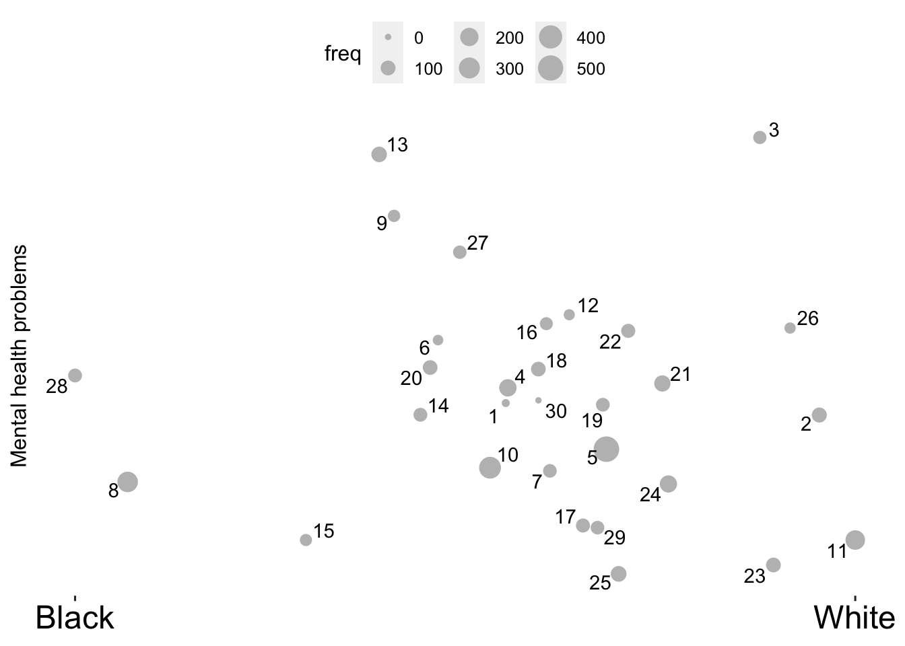
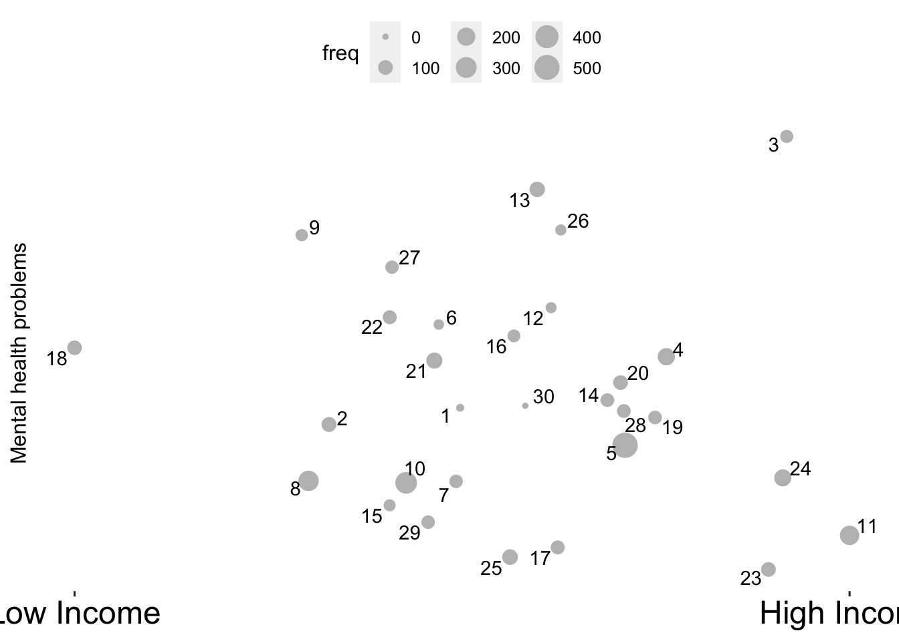
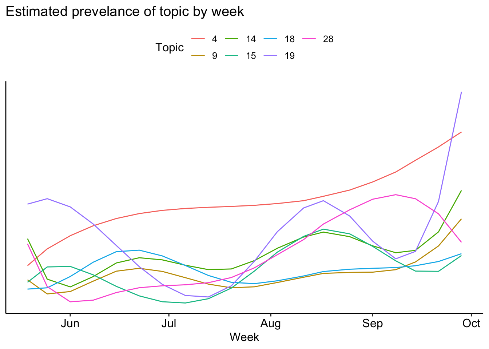
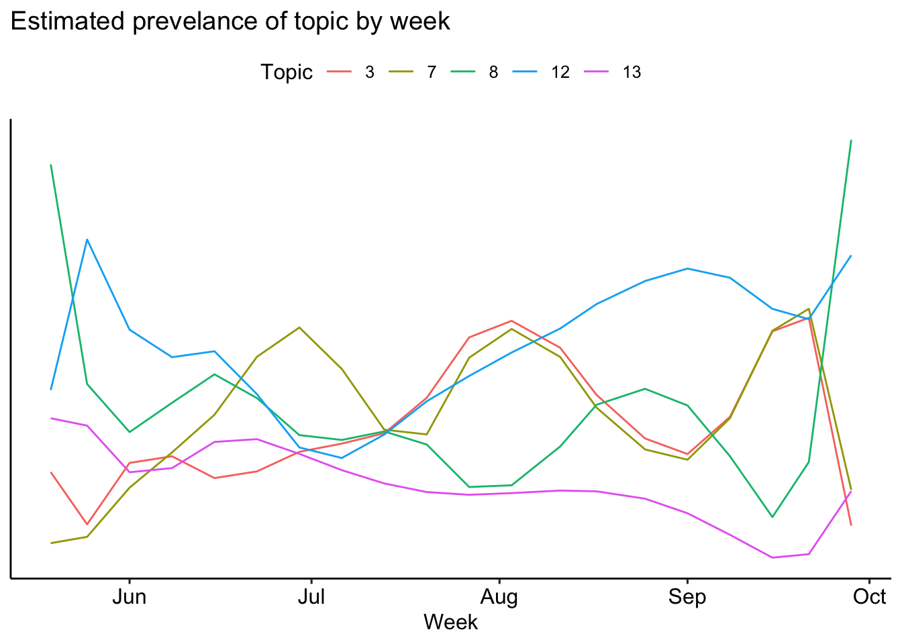
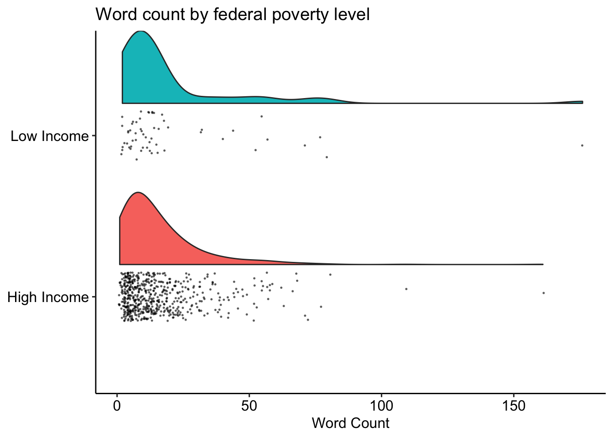
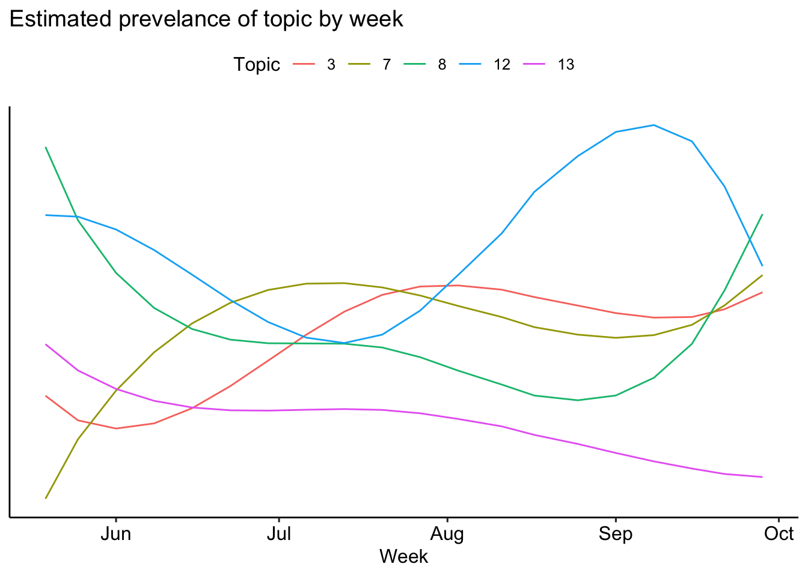
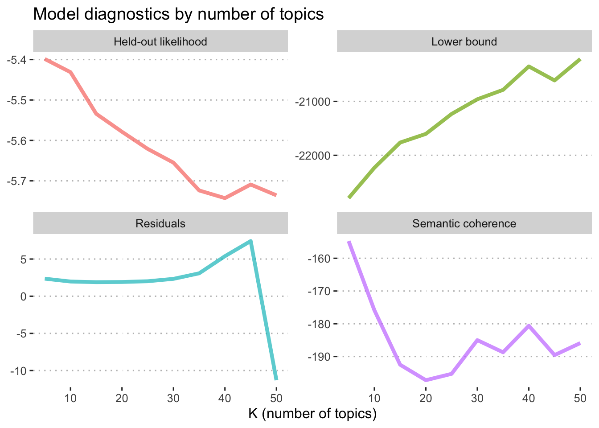
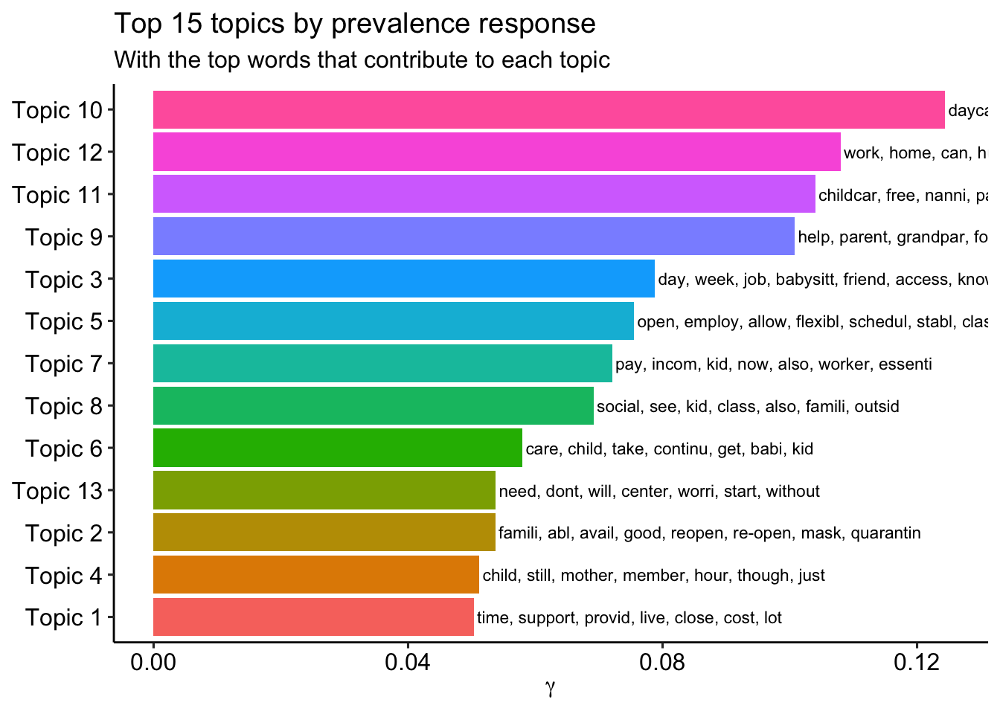
## Topic 1 Top Words:
## Highest Prob: time, support, provid, live, close
## FREX: live, support, relat, cost, provid
## Lift: live, high-qual, lockdown, relat, team
## Score: provid, support, time, lockdown, live##
## Topic 1:
## Part time childcare
## Part time childcare
## having my parents near by for childcare and support
## Part time childcare
## Support from family for childcare## Topic 2 Top Words:
## Highest Prob: famili, abl, avail, good, reopen
## FREX: avail, abl, re-open, famili, mask
## Lift: mask, quarantin, re-open, avail, abl
## Score: famili, re-open, abl, avail, good##
## Topic 2:
## Food stamps, having employment, and reliable daycare
## Family providing free childcare
## that my 15 year old is helping with childcare
## Having a nanny for the time being
## Outdoors, babysitter.## Topic 3 Top Words:
## Highest Prob: day, week, job, babysitt, friend
## FREX: job, day, babysitt, access, communiti
## Lift: job, communiti, guess, qualiti, expens
## Score: babysitt, communiti, job, day, friend##
## Topic 3:
## Each other, childcare, talking (virtually) to friends and family. Knowing we're financially secure. Knowing quality health care is accessible.
## Having a babysitter watch shortly during the day as I run errands
## We have an amazing babysitter who has been gracious enough to watch our daughter an extra day each week while day care is closed
## having childcare for 2 days a week and FMLA and covid leave from the CARES Act
## Splitting the cost of childcare with another family we know and having a friend watch the kids in the mornings during the week.## quartz_off_screen
## 2## Topic 4 Top Words:
## Highest Prob: child, still, mother, member, hour
## FREX: mother, still, member, child, hope
## Lift: extrem, sister, system, sever, includ
## Score: child, extrem, mother, still, member##
## Topic 4:
## The preschool/childcare for my oldest child just had a limited re-opening today with an extremely small number of kids and limited (less) hours. We hope that this will continue. The childcare place for my youngest also re-opened fully, just with special protocols.
## My family support system of grandmothers, sister and spouse have been a huge help, especially with child care.
## We have childcare again, though the hours are limited compared to their regular hours.
## That I am still able to nanny. I will be having to take several weeks off of that when our 2nd baby is born in August though. We also have a really good family / friends support system, which has been a huge lifesaver.
## My live in mother for child care## Topic 5 Top Words:
## Highest Prob: open, employ, allow, flexibl, schedul
## FREX: open, flexibl, stabl, part-tim, normal
## Lift: normal, open, appoint, art, danc
## Score: open, employ, lifesav, flexibl, normal##
## Topic 5:
## Online classes (art)
## FaceTime play dates
## Telemedicine appointments
## Grocery delivery services
## Zoom with the preschool class, art projects, dance parties, Daniel tiger and cheetohs.
## Public schools being open for in person classes. Like prek and early headstart
## Educational offerings online from Youtube kids, Amazon Prime, our JCC daycare center and various museums and performing art institutions around the world.
## Honestly. ....youtube. it is a great source for projects to do with the kids, or as a babysitter sometimes!## Topic 6 Top Words:
## Highest Prob: care, child, take, continu, get
## FREX: care, continu, option, take, babi
## Lift: cheap, larg, necess, slowli, licens
## Score: care, cheap, child, continu, babi##
## Topic 6:
## We were approved for SNAPS benefits. It isn't much, but it helps. Also, because of the day care issue, my children's grandparents have been keeping the kids while we are at work, but, it is getting difficult for them to continue watching the kids because their grandmother has a degenerative eye disease that is slowly but surely taking away her abilitly to see. She is slowly going blind and its getting harder for her to care for my kids.
## Not having to pay for child care so I can stay home and watch baby.
## Some access to child care
## What is hoping me and my children the most right now is family members but that includes just my aunt and uncle and their children they have been my child care and my best support and paying my monthly rent
## Having work and child care to get out of the house## Topic 7 Top Words:
## Highest Prob: pay, incom, kid, now, also
## FREX: pay, worker, essenti, assist, money
## Lift: bill, card, client, creativ, credit
## Score: one, pay, essenti, worker, bill##
## Topic 7:
## Having one parent home to act as the guardian of our social emotional health, and also so we don’t have to expose our kids to other kids’ potential germs at daycare, is the most helpful thing right now. My husband is an essential worker and we do have income, thank goodness, but the government assistance for the pandemic is also incredibly helpful.
## Our income has stayed the same so far so at least we aren't stressed about money right now (especially with paying less for child care since the kids are mostly home with us).
## We are thankful to have found the kids a nanny for half of the week. That person has been quite uplifting, and she is great at making sure the kids get out and move their bodies in safe places.
## That our daycare center has not closed. If they closed I would have to quit my job to stay home and we would not make enough money on one income to pay bills
## Ability for me to work from home and taking care of my kids at the same time. This has allowed me to save up on commuting and childcare cost, therefore enabled me to pay down debt and better financially. Also, I feel more at ease and stress reduce as I don’t have obligation to head to office for work and leave my kids with a sitter.## quartz_off_screen
## 2## Topic 8 Top Words:
## Highest Prob: social, see, kid, class, also
## FREX: distanc, neighbor, nice, visit, attend
## Lift: neighbor, nice, visit, adult, age
## Score: playgroup, social, see, class, connect##
## Topic 8:
## We decided to create a COVID bubble with our next door neighbors, who also work from home and take the same precautions we do regarding social distancing. We spend time with them and let our kids, who are classmates, play together. Both kids are only children, so having another kid to play with after 3 months of isolation has been wonderful for them, and for the adults too.
## Is “my mom” an appropriate answer? I really don’t know. This is very isolating. Since my daughter goes to daycare, she could be carrying the virus and I am scared to be around family members because I do not want to unknowingly pass the virus to people I love (or anyone). I’d love for this to end.
## Video chats with family members. Social distance visits in yard with sister/daughter. Online learning resources. Walmart pick-up and Amazon delivery. Partial unemployment I'm receiving as I stopped working as a COVID-19 precaution to protect my family (also lacked childcare).
## Daycare has been of great help for us with our youngest. That took off a greater burden while we're at home working. We've been having social distancing playdates and seeing family over video calls or in front/back yards with social distancing parameters. We take weekly weekend bike rides as a family and go swimming every weekend, if not during the week. I've been having bimonthly video calls with my closest girlfriends. I practice daily reiki and meditation. Our daughters love their yoga and my oldest loves her meditation class she takes twice a week. Giving our girls screen time (not being so strict) has been helpful for the most part (until we have to turn the TV off or remove the tablet). Getting more 1:1 time with my husband has been really nice. Me cooking from home more and having dinner together at a more reasonable hour to put the girls to bed at an earlier bedtime has been very helpful.
## Having a steady income and socially distanced contact with our next door neighbors, whose son is also in my daughter's class at school. The kids have exchanged letters and toys, and we have cooked meals for each other and left them on the doorstep. It's been a nice way to stay connected.## quartz_off_screen
## 2## Topic 9 Top Words:
## Highest Prob: help, parent, grandpar, food, stay
## FREX: parent, help, stamp, give, that
## Lift: church, felt, immens, instead, medicaid
## Score: help, grandpar, parent, instead, food##
## Topic 9:
## The extra 600 has helped me add to the funds I saved for a used car. I could buy a 13,000 car cash if I wanted to but now more concerned with Bill's in the future I can't work due to no childcare and e learning. Have snap helps me stock up on foods as prices increase and meat is scarce or limited. Free lunch from schools they give for the week helps me feed my kids a portion controlled meal 3 times a day and helps me save money by not spending it on fast food, etc. No disconnect on light bill let's me pay on the lights when I am financially able to pay it instead of paying lump sum when I am late on payment. I keep balance under $225. Medicaid allows me to go to Doctors care when I am really concerned about me or my children's health but afraid to go to regular doctors office that's crowded especially pediatric offices. I can sign in online and wait in car until called.
## My parents help with childcare and that helps immensely
## food stamps, my parents with childcare
## Free food programs through daughters school and produce distribution through local churches. Extended Family helping with childcare
## My parents stayed with us for 3 weeks and helped with childcare and all sorts of cleaning and projects around the house.## Topic 10 Top Words:
## Highest Prob: daycar, back, son, get, send
## FREX: son, daycar, back, old, keep
## Lift: attent, happier, hes, high, luckili
## Score: daycar, back, send, son, old##
## Topic 10:
## Getting back into our regular routine with my daughter being at school and son being at daycare.
## Trying to empathize more with my child. We are super stressed as parents, but I understand my son isn’t getting the typical student/teacher interaction and learning they usually get while in childcare. So I understand why there are more tantrums and I try to keep my son happy and engaged as much as humanly possible.
## Sending our children back to daycare. They are much happier with the attention, care, and interaction that they were not getting from us.
## Having the daycare for my older son still. It’s hard because they can’t be in school.
## putting our son back in daycare## Topic 11 Top Words:
## Highest Prob: childcar, free, nanni, part, understand
## FREX: part, childcar, free, mother--law, nanni
## Lift: communic, final, part, mother--law, doesn’t
## Score: childcar, part, free, nanni, understand##
## Topic 11:
## Creating a schedule. Communicating daily in the morning to understand our work/childcare needs throughout the day.
## Finally having some part time childcare (an in-home babysitter)
## Grandparents providing free childcare
## Grandparents providing free childcare
## Access to grandparent to help with childcare. Understanding coworkers and bosses.## Topic 12 Top Words:
## Highest Prob: work, home, can, husband, fact
## FREX: work, full, fact, husband, household
## Lift: household, easier, entir, major, paycheck
## Score: work, home, mom, can, husband##
## Topic 12:
## Working from home! Since our childcare plans either got too dangerous or fell through because of covid, it's been great that my work can be done entirely from home and my husband has been able to be home a few afternoons a week so I can focus on work.
## The fact that my husband has remained steadily employed and that I was already a stay at home mom so we aren’t scrambling for childcare. It’s nerve racking for my husband to leave each day and potentially be exposed but having a steady paycheck is a godsend.
## My mom moved in with us to support our childcare needs and has helped maintain our household while my husband and I work full time. It has been a great set up for myself, husband, her and my toddler.
## I’m off for the summer & we have a childcare/schooling plan to start the year regardless of my work scenario. My husband is currently working from home.
## That I'm able to work from home to keep my family safe and that my mom lives with me and helps with childcare so that I can actually work.## quartz_off_screen
## 2## Topic 13 Top Words:
## Highest Prob: need, dont, will, center, worri
## FREX: consist, worri, dont, afford, come
## Lift: afford, camp, clear, fortun, oper
## Score: toddler’, need, center, dont, consist##
## Topic 13:
## My spouse just found full-time employment, so we needed to find additional childcare. We were lucky to find someone who can come to my spouse's home and look after the kids there while my spouse works remotely. Our kids are taking quite well to the childcare provider, and that has been a morale booster for our family.
## Ourselves - we're doing our best to manage the situation. But our childcare center is fortunately also adjusting their billing/tuition process because they are not in full operations.
## Honestly, having my husband furloughed means that we don't have to worry about finding a daycare center or nanny for our kids.
## Our nanny is so helpful, but we have her for 10 hours a week, which is what we can afford right now, but isn't sufficient. She's also not equipped to care for our older children, so we don't always have good solutions to keep everyone happy.
## That we don't have to find an odd source of child care as I work from home, although now I haven't been able to work at all without their head start program.## quartz_off_screen
## 2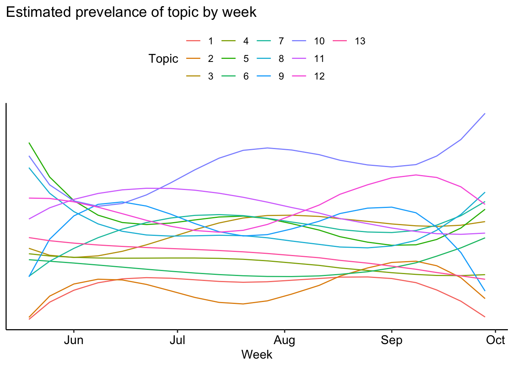
## ICLUST (Item Cluster Analysis)
## Call: iclust(r.mat = topics_only_wide)
##
## Purified Alpha:
## C10 C11
## 0.72 0.38
##
## G6* reliability:
## C10 C11
## 0.82 -0.11
##
## Original Beta:
## C10 C11
## 0.32 0.10
##
## Cluster size:
## C10 C11
## 8 5
##
## Item by Cluster Structure matrix:
## O P C10 C11
## Topic1 C10 C10 0.65 -0.20
## Topic10 C10 C10 -0.50 0.31
## Topic11 C10 C10 0.58 -0.34
## Topic12 C11 C11 -0.01 -0.39
## Topic13 C11 C11 -0.29 -0.29
## Topic2 C10 C10 0.49 0.24
## Topic3 C11 C11 0.09 -0.18
## Topic4 C10 C10 0.47 0.16
## Topic5 C10 C10 -0.45 0.15
## Topic6 C10 C10 0.30 0.13
## Topic7 C11 C11 0.01 -0.04
## Topic8 C11 C11 -0.24 0.65
## Topic9 C10 C10 0.61 0.37
##
## With eigenvalues of:
## C10 C11
## 2.3 1.2
##
## Purified scale intercorrelations
## reliabilities on diagonal
## correlations corrected for attenuation above diagonal:
## C10 C11
## C10 0.72 -0.02
## C11 -0.01 0.38
##
## Cluster fit = 0.43 Pattern fit = 0.88 RMSR = 0.12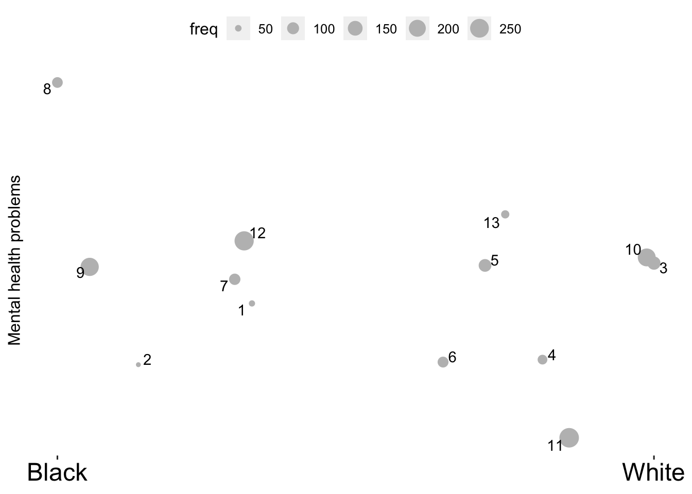
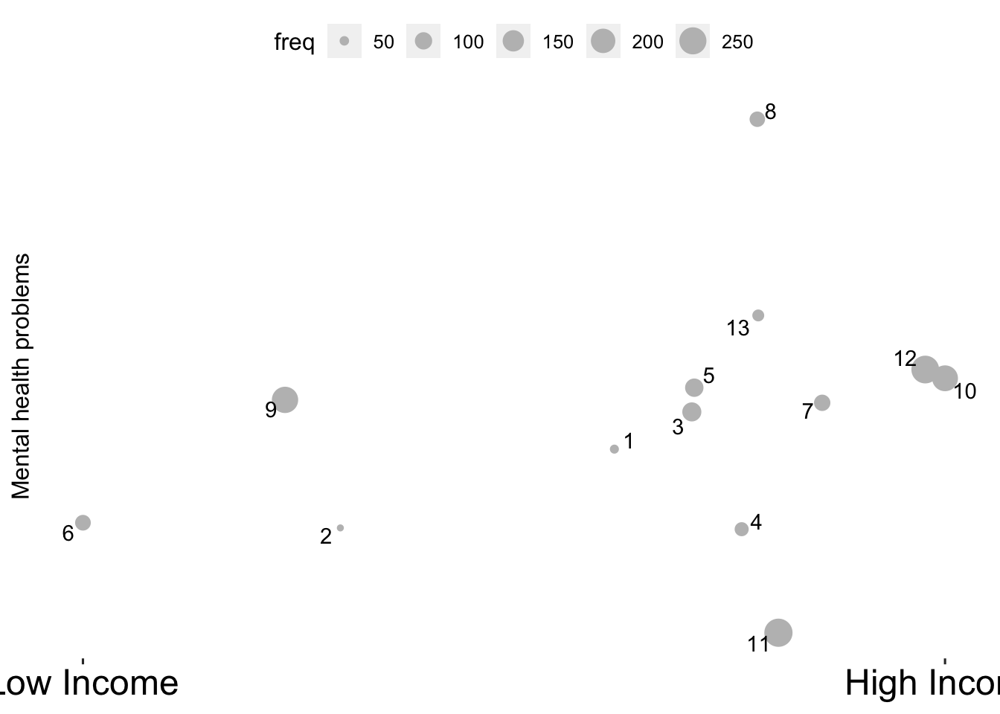
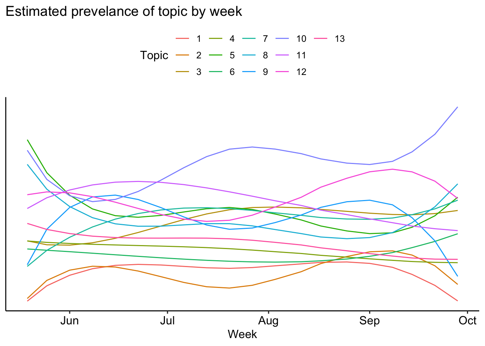
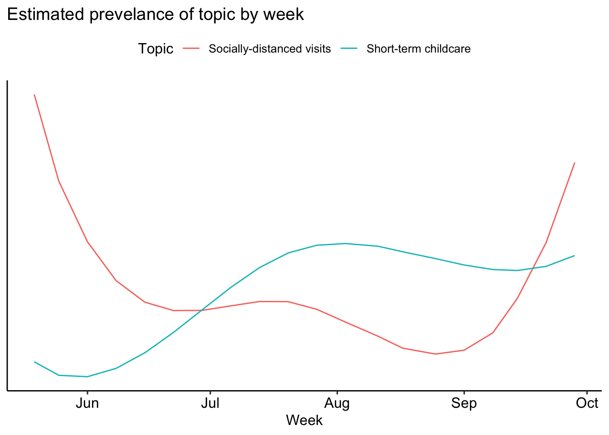